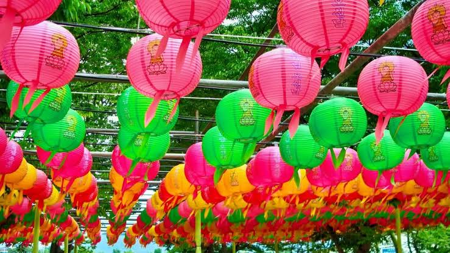
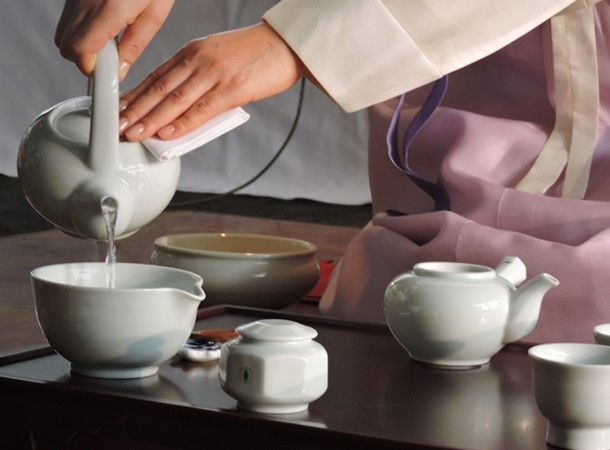
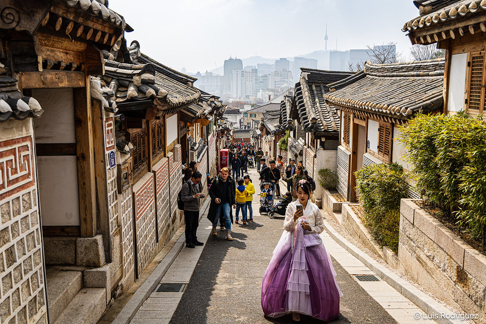
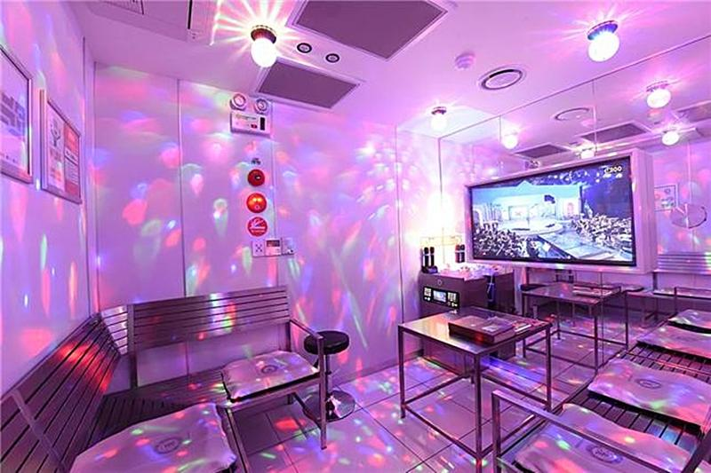
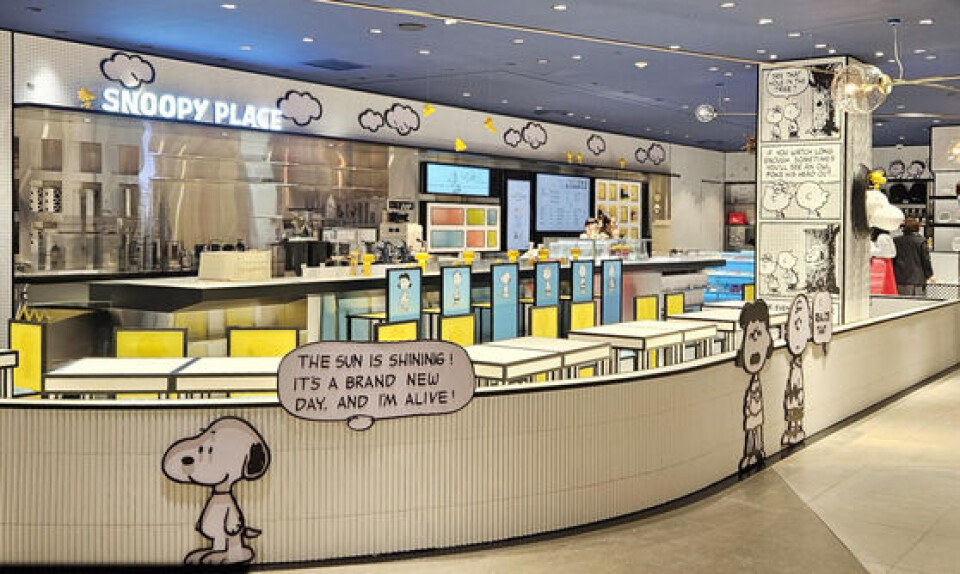
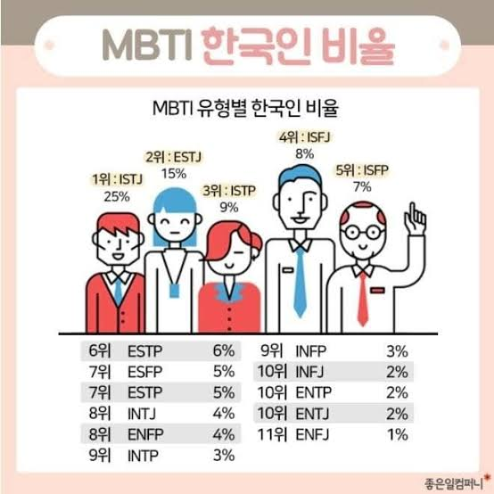

- Stray Kids
- FARMING
- Any
- Awkward Silence
Cultura, Tradición y Festividades

Festivales
Seollal, Chuseok, Nacimiento de Buda, Gwangbokjeol, etc.

Ceremonias
Ceremonia del Té, Charye, Jesa, Gyeolhon-sik, Pebaek, Baegil, Doljanchi, etc.
Templos y Palacios
Palacio Gyeongbokgung, Palacio Changdeokgung, Palacio Deoksugung, Templo Bulguksa, Templo Bongeunsa, etc.

Aldeas y Vestimenta
Aldea Hanok de Jeonju, Aldea de Yangdong, Aldea Folclórica de Andong Hahoe. Alquiler de Hanboks.
Entretenimiento y Recreación

Noraebang (Karaoke)
A diferencia del karaoke occidental, en un noraebang alquilas una habitación privada para ti y tu grupo de amigos o familiares. Usual de noche.

Lugares Temáticos
Tiendas, Cafés, Casas, Centros Comerciales, etc. de personajes, series/películas o temáticas variadas.

Kpop y K-Dramas
Hay 4 empresas musicales predominantes: JYP, SM, YG y HYBE. Los K-Dramas pueden verse en sitios como Netflix, PlutoTV, Disney+, Amazon Prime Video, iQIYI, etc.

Test y Análisis
Test de Personalidad, Análisis de Colorimetría, Estilo, Maquillaje, etc.
Recomendaciones de Kpop
- Aespa
- LEMONADE
- Armageddon
- Supernova
Recomendaciones de K-Drama
Bon Appétit, Majestad
La talentosa chef moderna Yeon Ji-young viaja misteriosamente al periodo de la antigua Corea (A la Dinastía Joseon), después de ganar su tercera Estrella Michcelin. Allí conoce al rey Yi Heon, un monarca exigente, duro y con fama de tirano, pero profundamente herido por su pasado. Ji-young utiliza sus habilidades culinarias modernas y platos creativos (como fusión y repostería) para sorprender al rey, cambiando la relación entre ambos y ablandando el corazón del monarca. A lo largo de la historia enfrentan conspiraciones de la corte, un intenso concurso de cocina contra enviados de la Dinastía Ming, e investigaciones sobre la salud del Gran Príncipe Jinmyeong.
Beso Dinamita
La historia arranca con Go Da-rim, una joven desempleada que, tras un romance relámpago en la isla de Jeju con el adinerado Gong Ji-hyeok, termina separándose abruptamente de él. Tiempo después, desesperada por conseguir estabilidad económica, Da-rim postula a un empleo temporal en una empresa de productos para bebés. El gran problema es que, para cumplir con el perfil del puesto, decide hacerse pasar por una madre de familia casada. Todo se sale de control cuando descubre que su jefe directo en el equipo de trabajo es el mismísimo Ji-hyeok. A partir de ahí, ella intenta sostener la farsa corporativa mientras la química y la tensión del pasado vuelven a encenderse entre los dos. En medio del caos de ocultar su soltería, un beso impulsivo y accidental rompe todas las barreras y desata una ola de enredos y divertidos malentendidos de oficina.